다크엘프 장비 정보
1차·2차·3차 장비를 확인하세요. 아이템 이미지와 옵션을 한눈에 확인할 수 있습니다.
1차 장비
무기
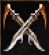
공격력 (작은/큰 몬스터) 20 / 16
추가 옵션 근거리 대미지+4, 근거리 명중+6, STR+2
안전 인챈트 +6까지 안전하게 가능
클래스 다크엘프
설명 인챈트 수치에 따라 더블 발동 확률 증가.
방어구
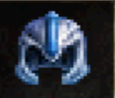
옵션 AC-3, STR+1, MR+5
종류 투구
클래스 다크엘프
안전 인챈트 +4까지 안전하게 가능
설명 인챈트+1 당 MR+2씩 증가하여 +10까지 MR+20
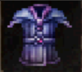
옵션 AC -13, HP 회복+4, MP 회복+8, 최대 HP+20, MR+7
옵션 AC-1, STR+2
종류 장갑
클래스 다크엘프
안전 인챈트 +4까지 안전하게 가능
설명 +5부터 인챈트+1 당 근거리 명중+1씩 증가하여 +10까지 근거리 명중+6

옵션 AC -3, STR+1
클래스 군주, 기사, 요정, 마법사, 다크엘프
인챈트 +4까지 안전하게 가능
설명 인챈트+1 당 AC-1 식 증가, +9에 대미지 감소+1, +7부터 인챈트+1 당 최대 HP+20씩 증가하여 +10까지 HP+80
옵션 AC-5, DEX+1, MR+7
클래스 다크엘프
안전 인챈트 +4까지 안전하게 가능
설명 인챈트+1 당 MR+3, +5부터 인챈트+1 당 정령 내성+1씩 증가하여 +10까지 MR+30, 정령 내성+6
옵션 STR+1
클래스 다크엘프
안전 인챈트 0
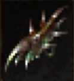
옵션 AC-1, STR+1, 추가 대미지+1, 최대 HP+30
클래스 다크엘프
안전 인챈트 0
설명 인챈트 수치에 따라 추가 옵션이 달라진다. +5 인챈트 시 근거리 대미지+1, +7 인챈트 시 근거리 대미지+2, +9 인챈트 시 근거리 대미지+3.
악세서리
옵션 AC-3, 근거리 대미지+2, 근거리 명중+2, 용언 내성+2
안전 인챈트 0
클래스 다크엘프
옵션 AC-2, STR+1, MR+2, 최대 HP+60
안전 인챈트 0
클래스 다크엘프
옵션 AC-3, STR+2, 추가 명중+1
안전 인챈트 0
클래스 다크엘프
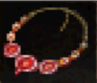
옵션 : AC+2, STR+2, 추가 명중+1
안전 인챈트 0
2차 장비
무기
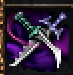
공격력 (작은/큰 몬스터) 11 / 12
추가 옵션 아이템 수정 필요
안전 인챈트 +6까지 안전하게 가능
방어구
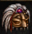
옵션 AC -2, CON+1, CHA-1
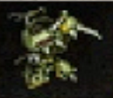
옵션 AC -10, HP 회복+7, MP 회복+8, 대미지 감소+3, 땅 속성 저항+50, 모든 내성+2, 독 내성
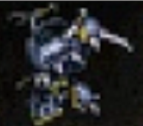
옵션 AC -10, 최대 HP+20, HP 회복+9, 최대 MP+30, MP 회복+9, 모든 내성+2, 물 속성 저항+50
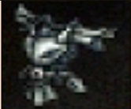
옵션 AC -11, HP 회복+7, MP 회복+8, 최대 HP+60, 최대 MP+20, MR+8, 모든 내성+2, 바람 속성 저항+50
옵션 AC -12, 16초마다 MP 회복+4, 최대 HP+70, 최대 MP+30, DEX+1, 원거리 대미지+3, 대미지 감소 무시+3, 모든 내성+2, 불 속성 저항+50
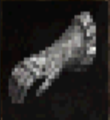
옵션 AC -4
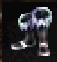
옵션 AC -4
옵션 AC -5
옵션 AC -2, STR+1, 근거리 대미지+1
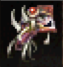
옵션 AC-4, STR+2, 추가 대미지+2, HP+30
악세서리

옵션 AC-1
인챈트 -
설명 룸티스 계열 귀걸이입니다.

옵션 AC-1 / 최대 MP+5
인챈트 -
설명 룸티스 계열 귀걸이입니다.
옵션 AC-1 / 최대 HP+10
인챈트 -
설명 룸티스 계열 귀걸이입니다.

옵션 AC-1 / 근거리 명중+1 / 근거리 대미지+1
인챈트 -
설명 스냅퍼 계열 반지입니다.

옵션 AC-1 / 최대 HP+50
인챈트 -
설명 스냅퍼 계열 반지입니다.
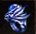
옵션 AC-1 / 최대 MP+15
인챈트 -
설명 스냅퍼 계열 반지입니다.

옵션 AC-1 / MR+5
인챈트 -
설명 스냅퍼 계열 반지입니다.
옵션 AC-4, STR+2, 소지 무게 증가+2000, 대미지 감소+2, 대미지 감소 무시+2
안전 인챈트 0
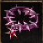
옵션 AC-2, STR+2, HP 회복-5, 기술 내성+5
안전 인챈트 0
3차 장비
무기
공격력 (작은/큰 몬스터) 32 / 22
추가 옵션 STR+2, 근거리 대미지+12, 근거리 명중+15, 정령 적중+7, 마법 발동: 스위프트
안전 인챈트 0
방어구
옵션 : AC+8, STR+3, MR+9
옵션 AC-15, STR+4, 추가 대미지+4
옵션 AC-6, STR+4, 추가 대미지+3
옵션 AC-6, STR+4, 추가 대미지+3
옵션 AC-9, STR+4, MR+11
옵션 AC-3, STR+2, DEX+2, INT+2, 최대 HP+30, 대미지 감소+3, 스턴 내성+5, MR+10
안전 인챈트 +4
클래스 다크엘프
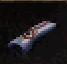
옵션 AC-5, STR+2, 근거리 대미지+3, 원거리 대미지 감소+5, 스턴 저항+5%
안전 인챈트 0
악세서리
3차 악세서리 목록은 아직 제공되지 않았습니다.